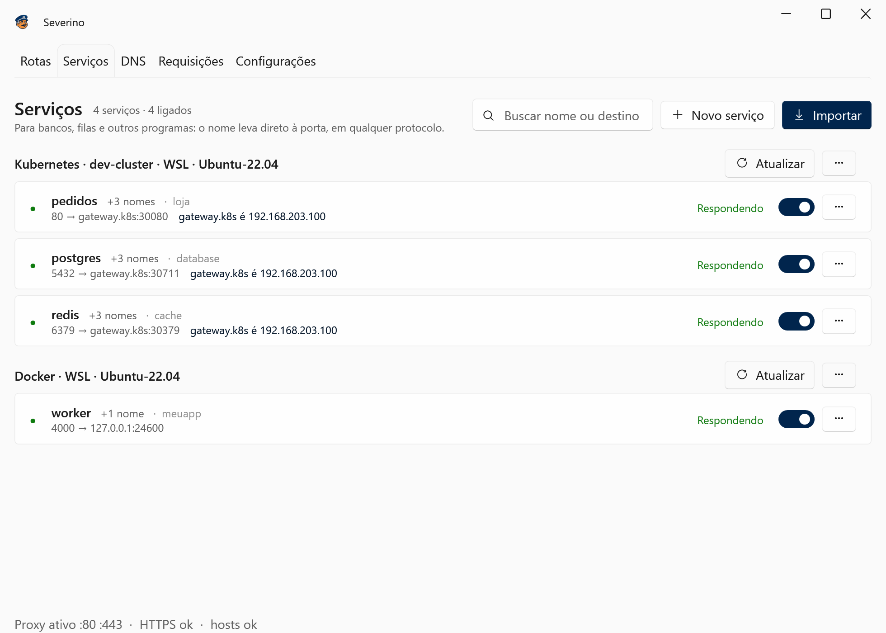
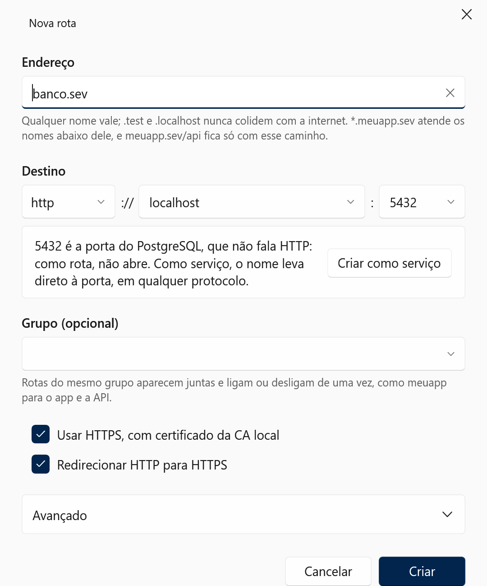

Chega de localhost:3000.
O Severino é o porteiro dos seus apps de dev. Cada um ganha um nome, como meuapp.sev, com HTTPS de verdade, esteja ele no Windows, no WSL, num container ou no cluster. Hosts, proxy e certificado ficam por conta dele.
Grátis e com código aberto. Para Windows 10 e 11, 64 bits.

Seu app mora em um de quatro endereços. O porteiro atende todos.
Front no Windows, API no WSL, worker num container, banco no cluster. Do navegador ou do terminal, cada um responde pelo nome.
-
Windows
O Vite, o .NET, o Spring: o que roda em localhost ganha nome e cadeado.
meuapp.sev → localhost:3000 -
WSL
Ligue a distro, e os apps lá dentro chamam os mesmos nomes. Ninguém edita /etc/hosts à mão.
~$ curl http://pedidos.loja -
Docker
Container pelo nome do serviço no Compose. Recriou e a porta mudou? Ele percebe sozinho.
worker:4000 → container -
Kubernetes
O service pelo nome de dentro do cluster. NodePort, port-forward ou Ingress: ele escolhe o caminho.
postgres.database:5432
Três passos. Um é seu, dois são dele.
-
Diga o nome e a porta
Numa janela, sem terminal. Se o destino for um banco ou outra máquina, ele sugere o tipo certo de nome.
-
Ele arruma a portaria
Grava o nome no hosts, num bloco só dele, e passa a atender nas portas 80 e 443.
# >>> Severino managed block (do not edit) 127.0.0.1 meuapp.sev ::1 meuapp.sev # <<< Severino -
Abra no navegador
Com cadeado e tudo. Hot reload e WebSocket continuam funcionando.
Três jeitos de dar nome. Cada um na sua aba.
Rota para o navegador, serviço para o resto, DNS para outras máquinas. E as três abas conversam: um IP mudado no DNS muda o destino de tudo que usa aquele nome.
Rotas: para abrir no navegador
- HTTPS sem drama. Uma autoridade certificadora só sua, que só assina os seus domínios.
- Um domínio, vários apps. meuapp.sev/api vai para a API, o resto vai para o front.
- Curinga. *.meuapp.sev atende cliente42.meuapp.sev e qualquer outro nome abaixo.
- Grupos. Uma chave liga ou desliga o projeto inteiro.

Serviços: para bancos, filas e o resto
- Qualquer protocolo. Postgres, Redis, gRPC, RabbitMQ: o nome leva direto à porta, byte a byte.
- Vêm prontos. Importe do Kubernetes e do Docker, no Windows ou no WSL.
- Se corrigem sozinhos. Container recriado em outra porta volta a responder em segundos.
- Destino por nome. gateway.k8s em vez do IP do nó, com o IP sempre à vista.

DNS: um nome direto para um IP
- Vale com o app fechado. banco.interno para 10.0.0.8, como uma linha escrita à mão, e também no WSL.
- O hosts inteiro à vista. Linhas de outros programas aparecem marcadas, e só mudam se você pedir.
- Sem Bloco de Notas de administrador. Rede privada entra na hora; IP público pede a confirmação do Windows.

Errou o tipo? Ele avisa.
Uma rota para a 5432 nunca abriria no navegador. O Severino reconhece a porta do PostgreSQL e oferece criar um serviço com o que você já digitou.

Cada requisição, com status e tempo
O que passou pelo porteiro, inclusive WebSockets e conexões dos serviços. Fica só na memória: nada vai para o disco.

O cluster pelo nome de dentro do cluster
Seu app chama postgres.database:5432 como faria dentro do Kubernetes, e chega lá. Sem mudar uma linha de configuração.
- Importa sozinho. Pergunta ao kubectl e ao docker que você já tem, no Windows ou dentro do WSL, e lista o que achou. Você só marca.
- Os quatro nomes. pedidos, pedidos.loja, pedidos.loja.svc e pedidos.loja.svc.cluster.local levam ao mesmo lugar.
- Só ClusterIP? Tudo bem. Ele mantém um kubectl port-forward rodando e o reinicia quando a VPN pisca.
- Ingress pelo caminho curto. O nome público vira uma rota direto para o controlador, sem dar a volta pela internet.
- Docker pelo nome do Compose. worker:4000 chega à porta publicada do container, seja qual for hoje.
- Apps no WSL também. As distros que você ligar recebem os mesmos nomes.

~$ curl http://pedidos.loja/saude
{"status":"ok"}
~$ psql -h postgres.database -U app
psql (16.4)
app=>E as miudezas que fazem diferença
-
Pelo terminal
Um módulo PowerShell fala com o app aberto, com as mesmas regras das telas.
PS> New-SeverinoRoute api.sev http://localhost:8080 -Https PS> Set-SeverinoDns banco.interno 10.0.0.8 PS> Disable-SeverinoRoute -Group meuapp -
Pausa num clique
O botão da bandeja devolve os domínios à internet na hora. Clicou de novo, voltou tudo.
-
Backup
Rotas, serviços e entradas DNS num arquivo só, para a máquina nova ou para o colega.
-
Primeiro uso conferido
Um assistente olha a porta 80, o serviço auxiliar e o proxy do sistema antes da primeira rota.
Tem acesso de administrador. Por isso conta tudo.
Um porteiro de confiança diz exatamente o que faz com a chave do prédio.
- Arquivo hosts
- Dois blocos marcados: o das rotas, sempre com endereços de loopback, que pausar ou fechar o app esvazia; e o das entradas DNS, que fica. Linhas de fora só mudam quando você pede, com um comentário acima.
- Serviço auxiliar
- A única parte que roda como administrador. Grava os blocos do hosts, responde os curingas num DNS só dele em 127.53.0.1 e cria as regras do Windows que mandam esses sufixos para lá. IP público e curinga novos só entram depois da sua confirmação. O app em si roda como você.
- Proxy
- Escuta só em 127.0.0.1 e ::1. Nada fica exposto na rede.
- HTTPS
- Uma autoridade certificadora só sua, que só consegue assinar os seus domínios. A chave fica protegida pelo Windows, na sua conta.
- Ir embora
- "Limpar tudo", nas configurações, e o desinstalador tiram o que o Severino colocou: os blocos do hosts, as regras de DNS, a autoridade certificadora, a inicialização automática e os nomes nas distros do WSL.
Perguntas na portaria
Funciona no macOS ou no Linux?
Não: o Severino é um app de Windows. Mas se você desenvolve no Linux pelo WSL 2, esse é exatamente o caso dele.
Preciso do Docker Desktop?
Não. Ele usa o docker que estiver à mão, no Windows ou dentro de uma distro do WSL. Sem Docker nenhum, rotas e DNS funcionam do mesmo jeito.
E para o Kubernetes, preciso de quê?
Do kubectl configurado, no Windows ou no WSL. O Severino usa o contexto atual. Se o cluster fica atrás de uma VPN, vale a VPN que você já usa.
O HTTPS funciona em qualquer navegador?
No Edge e no Chrome, sim: a autoridade certificadora entra no repositório do Windows. O Firefox tem lista própria; o Severino percebe e diz qual opção ligar.
Posso usar .dev ou um domínio que existe de verdade?
Pode, qualquer nome vale. O app avisa quando o nome existe na internet ou quando o navegador exige HTTPS, como no .dev. Os sufixos .test e .localhost nunca colidem com nada.
Meus apps ficam expostos na rede?
Não. O proxy escuta só em 127.0.0.1 e ::1, e o hosts só aponta para esta máquina, a não ser que você cadastre uma entrada DNS para outra.
Quanto custa?
Nada. É grátis, com o código no GitHub sob a licença MIT.
O porteiro já está de quepe
Um instalador para Windows 10 e 11, 64 bits, com tudo incluído. Ao abrir, um assistente confere a porta 80, o serviço auxiliar e o proxy do sistema antes da primeira rota.
Baixar para WindowsTodas as versões e o que mudou em cada uma ficam nas releases do GitHub.
O instalador ainda não tem assinatura digital. Se o Windows SmartScreen avisar, clique em "Mais informações" e depois em "Executar assim mesmo".